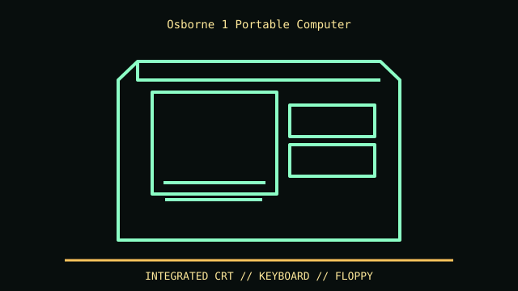

[ MODEL IDENTIFICATION // OSBORNE 1 LUGGABLE (1981) ]
Osborne 1 Portable Computer
Approx. 20.5 × 14.5 × 6.5 in (W × D × H); handling and case/foot conventions vary, so measure the exact specimen for display or shipping. Integrated 5-inch CRT and keyboard.

REVISION CAVEAT: Osborne 1 differs from Osborne Executive. Production revisions and repaired drive/keyboard assemblies require label and board checks.
Specifications & fit
| Catalog subcategory | Vintage desktop and integrated computer systems |
|---|---|
| Model / generation | Osborne 1 luggable (1981) |
| Dimensions / form factor / clearance | Approx. 20.5 × 14.5 × 6.5 in (W × D × H); handling and case/foot conventions vary, so measure the exact specimen for display or shipping. Integrated 5-inch CRT and keyboard. |
| Drive bays | Twin front-access 5.25-inch floppy drives; no standard 3.5/2.5-inch or ATX bay. |
| Compatibility | Integrated Osborne board, CRT, keyboard, PSU and drive cage; no conventional motherboard or PSU mounting pattern. |
| Revision identification | Osborne 1 differs from Osborne Executive. Production revisions and repaired drive/keyboard assemblies require label and board checks. |
Compatibility & preservation notes
Integrated Osborne board, CRT, keyboard, PSU and drive cage; no conventional motherboard or PSU mounting pattern.
Preserve keyboard, latches and original shell. CRT/mains work is specialist-only; record drive alignment and connectors before service.
- Record the complete model/SKU, serial/date label, board and bay/backplane identifiers, accessories and manual revision before disassembly.
- For integrated historical systems, follow the exact service manual for CRT, power and keyboard assemblies; do not assume a board or PSU swap is standardized.
- Keep original brackets, fasteners, trays, feet and front-panel parts labeled with the chassis. Do not force components into modified or incomplete specimens.
Manufacturer, archive & standards sources
- Bitsavers — Osborne 1 User Reference Guide (1981)Primary manufacturer or technical-reference source for this named model; use the exact SKU/document revision.
- Bitsavers — Osborne 1 Technical Manual (1982)Primary-era technical service reference; the exact board/drive revision and specimen condition still govern fit.
Approximate or convention-dependent dimensions are marked as such. Measure the individual unit for restoration, shipping and installation.